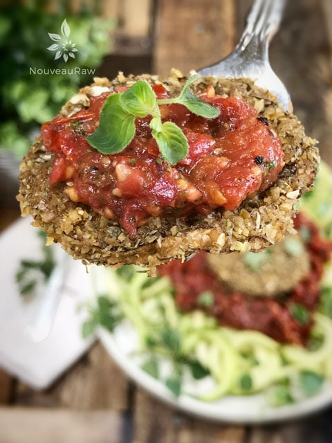

Italian Breaded Eggplant

– raw, vegan, gluten-free, nut-free –
Today I am going to cover a technique that just might help you fall in love with eggplant. For some of you, there won’t be any arm-twisting, but for others… well, I know that I have my work cut out for me. I used to be one that didn’t care for this unique fruit, as I always found it rubbery and bitter.
If you have been turned off for these same reasons, I ask that you give this recipe/technique a try… giving the poor eggplants of the world one more chance.
But before we can dive into a technique that will make this fruit more enjoyable, we need to back up a bit. We have to start off on the “right eggplant,” to do that, it’s essential to start by selecting a smaller one. I know you will be tempted to grab the Grand Poobah of all eggplants, but you must resist. The older and bigger, the more likely it is to taste bitter.
To peel or not to peel
It all boils down to your preference, the skin is entirely edible, nutritious, and can be left on. But there are a few things to keep in mind.
Larger eggplants can be tough-skinned, and if you’re holding one of these in your hands, peel that baby. If it is young and on the small side, go ahead and leave on the skin. Over the years, I have made raw eggplant both with and without… being equally happy with the outcome.

I never really knew that there were so many varieties of eggplants. They come in many shapes, sizes, and colors…they vary from white to green, to a deep blackish purple.
Given many names, based on variety, they are referred to as; Black Magic, Black Beauty, Black Bell eggplant, “Zebra” or “Graffiti” eggplant, Albino and White Beauty, Green Calyx, and Purple Calyx. I have made this recipe many times, usually with purple and white eggplants.
Eggplants don’t just look pretty; they also possess many nutritional benefits. They are naturally low in calories, are fat-free, and are an excellent source of dietary fiber. They are also high in potassium and contain iron and protein. So when asked, “Where do you get your protein?” You can say, “Eggplants, of course!” They are also over ninety percent of water! Get your hydration on!
There is one downside to eggplants, and that is if you are avoiding nightshades… that being the case, this recipe probably isn’t for you.
If you purchase some eggplants but can’t get to them right away…wash, dry, and store them at room temperature, making sure to use them within one or two days. You can also wrap it in a dry paper towel and place it in a perforated or loosely closed plastic bag in the refrigerator. Use within five to seven days.
You can make these Italian Breaded Eggplant slices and enjoy them as a snack, as hors-d’oeuvres, or make a meal out of them. I love them served over a bed of zucchini noodles that has been drenched in marinara sauce. But that’s me. Are you ready to love your eggplant today? If so, give this recipe a try and give a shout out on how it turns out. Blessings, amie sue
Italian Breaded Eggplant:
- 1/4 cup nondairy milk
- 1 cup ground flax seed
- 2 Tbsp Italian seasoning
- 1 tsp ground cumin
- 1/2 tsp Himalayan pink salt
- Eggplant, organic and raw (approx. 1 medium, depends on the size you have)
Cherry Tomato Marinara Sauce:
- 2 1/2 cups cherry tomatoes
- 1/2 cup sun-dried tomatoes, soaked
- 2 Tbsp cold-pressed olive oil
- 1 clove garlic
- 2 tsp dried oregano
- 2 tsp dried basil
- 1/4 cup fresh cilantro or parsley
- 1 tsp Himalayan pink salt
Preparation:
Italian Breaded Eggplant:
Eggplant prep:
- Salt each slice generously and lay them flat over a few layers of paper towels.
- Let the salted eggplant sit for 1/2 hour to 1 1/2 hours.
- You’ll see beads of moisture start to form on the surface of the eggplant as it sits.
- When you’re ready to proceed with the recipe, rinse the eggplant under cold water to remove the excess salt and pat dry.
Dredging Station #1:
- 1/4 cup of non-dairy milk.
- I prefer to either use thick coconut milk or thick almond milk (use less water when making regular almond milk).
- Dip each slice, one by one, into the milk, quickly moving to dredge station #2.
Dredging Station #2:
- In a bowl, combine the ground flax, chili powder, Italian seasoning, cumin, and salt.
- Using your magic bullet or coffee grinder, grind your flax seeds to a powder — place in a bowl. Now mix in the remaining ingredients, making sure that the spices get mixed in thoroughly.
- After dipping the eggplant into the milk, place it into the flax mixture and coat it thoroughly.
- Place the coated eggplant slice on the teflex sheet that is lining your dehydrator tray.
- If you don’t own the non-stick sheets, you can use parchment paper.
- Dehydrate at 145 degrees (F) for 1 hour, then reduce to 115 degrees (F) for about 1 more hour. We want these to be tender when you bite down on them.
- Storage: Place the eggplant slices, gently, in a container that will seal well. To be honest, I am not sure how long they will last…they seem to disappear quite quickly around here. If you do decide to store them, I would give them 2-3 days.
Cherry Tomato Marinara Sauce:
- In the food processor, combine the cherry tomatoes, sun-dried tomatoes, olive oil, garlic clove, oregano, basil, cilantro, and salt. Process until either chunky or smooth—however, you prefer.
- If the sun-dried tomatoes are tough and dry, soak them in some warm water to plump them back up. Be sure to drain and hand-squeeze the excess water from them before adding it to the food processor.
- You can use avocado oil in place of olive oil.
- Spiralize the zucchini to create pasta noodles. Toss with marina sauce, place some breaded eggplant slices on top and enjoy!
- If you have the time, heavily salt the zucchini noodles and let them sit for 30-60 minutes, this will pull the water out of them, leaving you with a softer noodle. Be sure to rinse the salt off and blot dry before adding the sauce.
- Store leftover sauce in the fridge for 3-4 days.
Culinary Explanations:
- Why do I start the dehydrator at 145 degrees (F)? Click (here) to learn the reason behind this.
- When working with fresh ingredients, it is essential to taste-test as you build a recipe. Learn why (here).
- Don’t own a dehydrator? Learn how to use your oven (here). I do, however honestly believe that it is a worthwhile investment. Click (here) to learn what I use.
© AmieSue.com